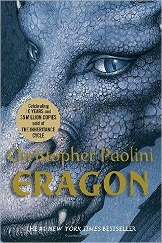
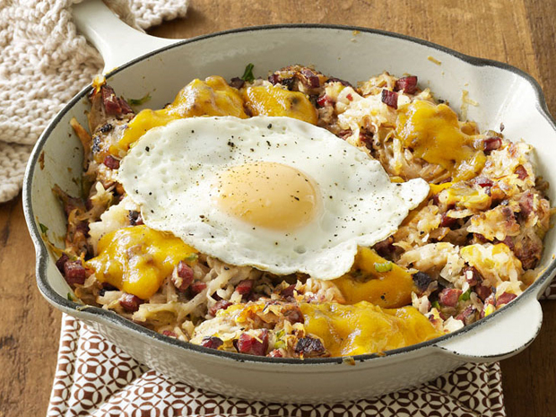
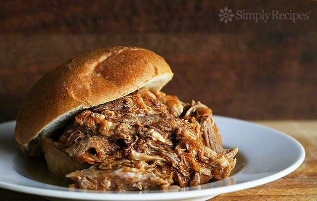

Brendan Nocis
About Me
I am a Junior at EWU pursuing a BA in Visual Communication Design. I am an avid skateboarder, and I recently quit smoking cigarrettes by vaping, which has turned into another hobby of mine. I enjoy exploring my beautiful state of Washington via hiking, especially with my girlfriend Jessa.
Goals and Aspirations
I would like to first, graduate with a degree in visual communication design. Following that I want to land a design job somewhere in Portland, where I can live with my girlfriend, as she teaches Art. I want to have my own chunk of land, and build my own style of housing somewhat like a tiny home.

Eragon
This is my favorite book, simply because it is the most well written fantasy adventure book I have ever come across. I'm not much of a reader actually, but the fact that this book is so large yet kept me flipping pages is why I think it's one of the best books of it's kind.

Corned Beef Hash
Roasted Beef mixed with potatoes and eggs; all fried up in a pan. YUM

Pulled Pork Sandwiches
Pork Roast pulled and shredded and put in a roll with cabbage and bbq sauce.

Carne Asada Steak
Skirt steak thinly sliced and seasoned with lime, char-grilled to a crisp.